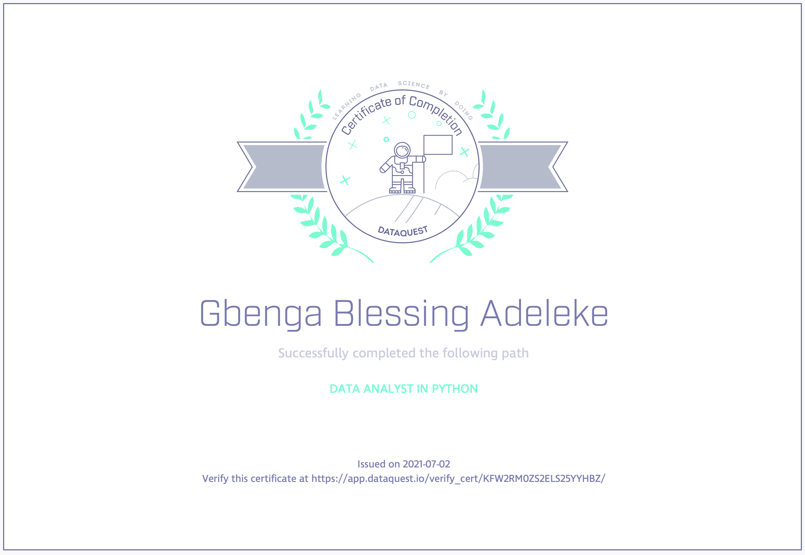
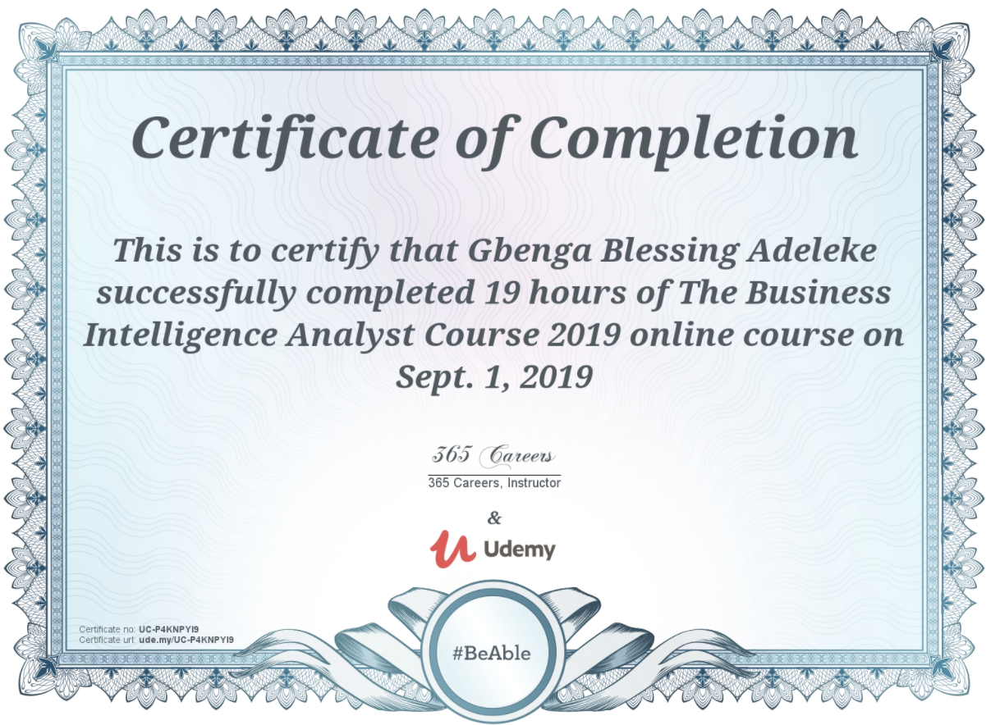

About Me
I am Gbenga Adeleke, a Business and Data Analytics enthusiast. I have completed my master’s degree in International and Development Economics at Hochschule für Technik und Wirtschaft, Berlin, and I am currently an enrolled student of Business Informatics at Fachhochschule Südwestfalen, Soest. I have an inclination for analysis, modelling and data reporting, technology, and innovation.
Over the last 2 years, I have been able to gain insight to the BI structure of various business models. I believe high data affinity is required to understand the past as well as present business behaviors to make informed business decisions that will shape future trends. Although my degrees have exposed me to several statistical tools, I take it upon myself to expand my skill set and compensate in areas that need improvement. As a result, I possess knowledge of several programs and tools varying from Excel, Google Data Studio, Google Analytics, Tableau, MicroStrategy, SQL, SAP BW to Python. Furthermore, I am open to learn and develop new skills.
In my spare time I love watching and playing football, travelling and photography.
Journey to Python Programming
Certifications




Hobby
Photography Work Sample